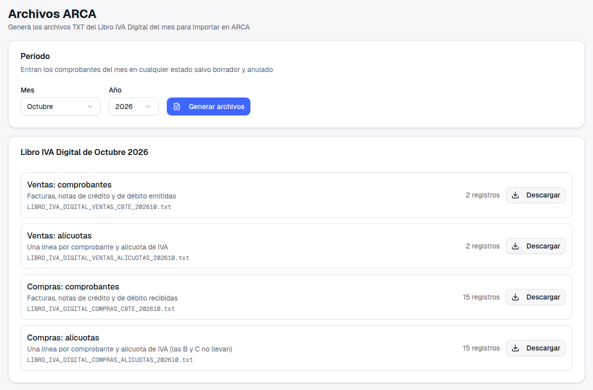
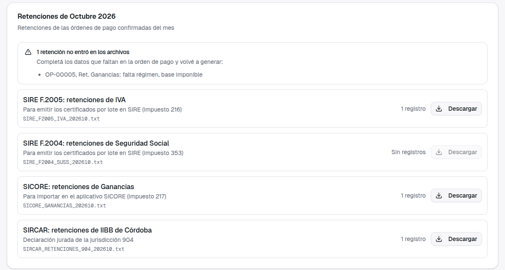
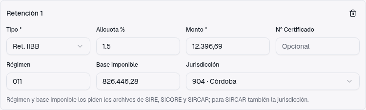

Archivos de retenciones para SIRE, SICORE y SIRCAR, y un Libro IVA Digital más completo
Guía de presentación: qué pasaba, qué cambió y cómo se usa
1. Qué pasaba
En Contabilidad → Archivos ARCA solo se podía generar el Libro IVA Digital. Las
retenciones que la empresa practica al pagar a proveedores había que cargarlas a mano en SIRE, SICORE y SIRCAR:
el sistema tenía generadores, pero no seguían los diseños oficiales y no tenían pantalla.
Además, el Libro IVA Digital informaba con el nombre del cliente las ventas a consumidor final sin
identificar, y los gastos bancarios salían con un código de comprobante que ARCA rechaza.
2. Qué cambió en la pantalla

Antes: solo los cuatro archivos del Libro IVA Digital.

Ahora, debajo del Libro IVA: un archivo por sistema y, en IIBB, uno por provincia. Si a una
retención le falta un dato, no entra y la pantalla dice en qué orden de pago completarla.
3. Qué archivo va a cada sistema
Retención
Archivo
Dónde se usa
IVA
SIRE F.2005
SIRE: emisión de certificados por lote
Seguridad Social
SIRE F.2004
SIRE: emisión de certificados por lote
Ganancias
SICORE
Importación en el aplicativo SICORE
Ingresos Brutos
SIRCAR, uno por jurisdicción
Declaración jurada de cada provincia en SIRCAR
Los formatos siguen la especificación de SIRE de ARCA y la Resolución General 2/2011 de la Comisión Arbitral.
4. Cómo se usa
Al cargar una orden de pago con retenciones, completar además el
régimen (el código de 3 dígitos) y la base imponible. En las de IIBB, también la
jurisdicción.

Retención de IIBB de Córdoba en la orden de pago.
En Contabilidad → Archivos ARCA, elegir el mes y tocar
Generar archivos. Entran las retenciones de las órdenes de pago confirmadas del mes.
Descargar cada archivo e importarlo en su sistema. Si la pantalla avisa que una
retención no entró, completar lo que falta en esa orden de pago y volver a generar.
5. Libro IVA Digital
✓
Consumidor final sin identificar:
una venta a un cliente sin CUIT ni DNI sale como "CONSUMIDOR FINAL", sin número de documento, como pide ARCA.
Si el cliente tiene DNI, sale con su documento y su nombre.
✓
Gastos bancarios: salen con el
comprobante 099 ("otros comprobantes"), con el punto de venta en ceros, y su IVA queda como crédito fiscal.
Antes salían con un código que ARCA rechazaba.
✓
Moneda: los comprobantes del
sistema se registran en pesos, así que el libro los sigue informando en pesos.
6. A tener en cuenta
Las órdenes de pago cargadas antes de este cambio no tienen régimen ni base imponible: sus retenciones
aparecen en el aviso hasta que se completen.
Conviene hacer una primera prueba importando el archivo de SICORE en el aplicativo, y confirmar que la
provincia esté adherida a SIRCAR antes de presentar su archivo: Buenos Aires y CABA tienen sus propios
sistemas.